Final HTML references use Mindbot, the personal agent. Original approved concepts are preserved below for comparison.
Open interactive preview →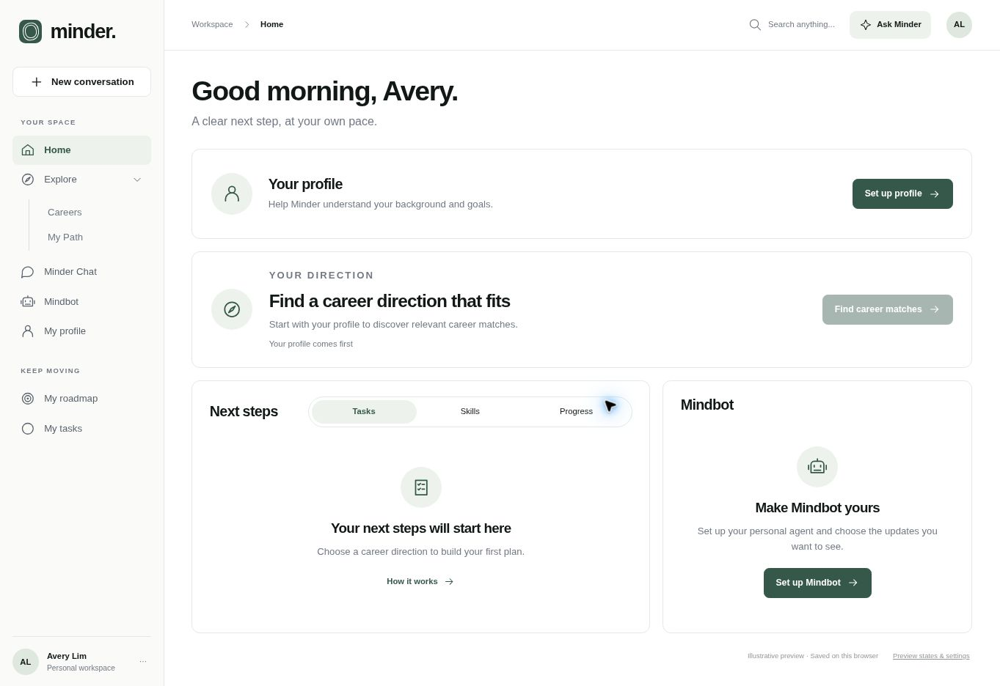
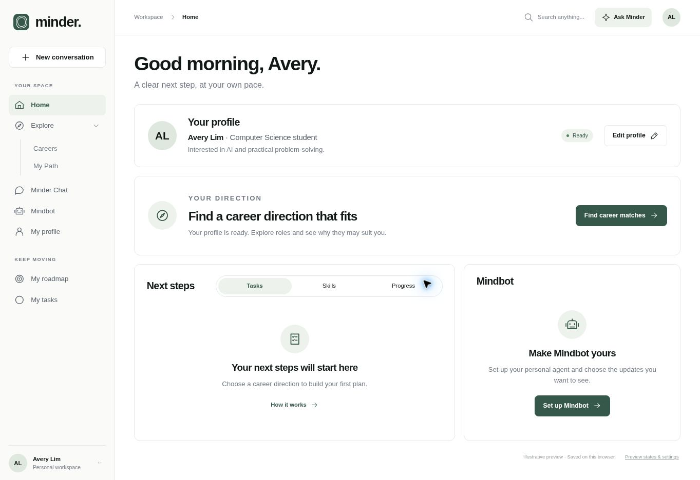
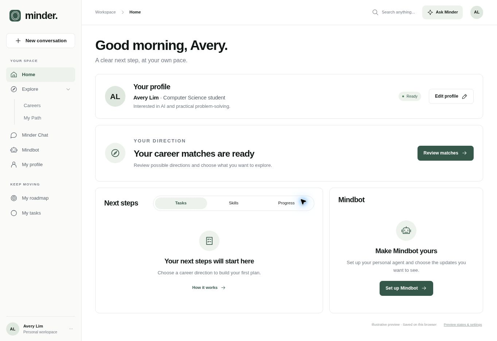
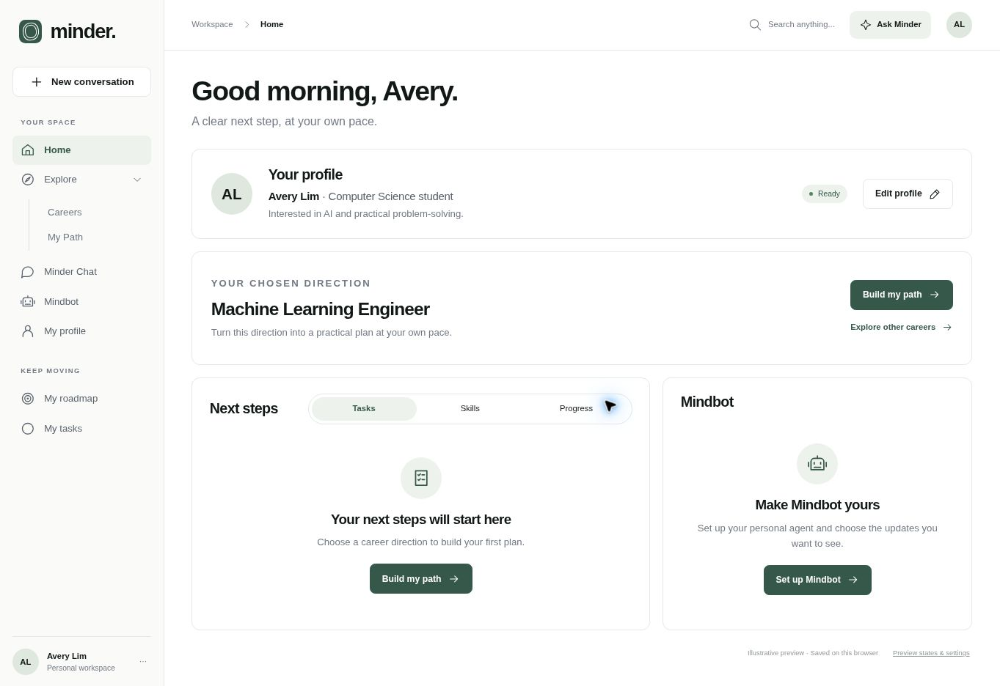
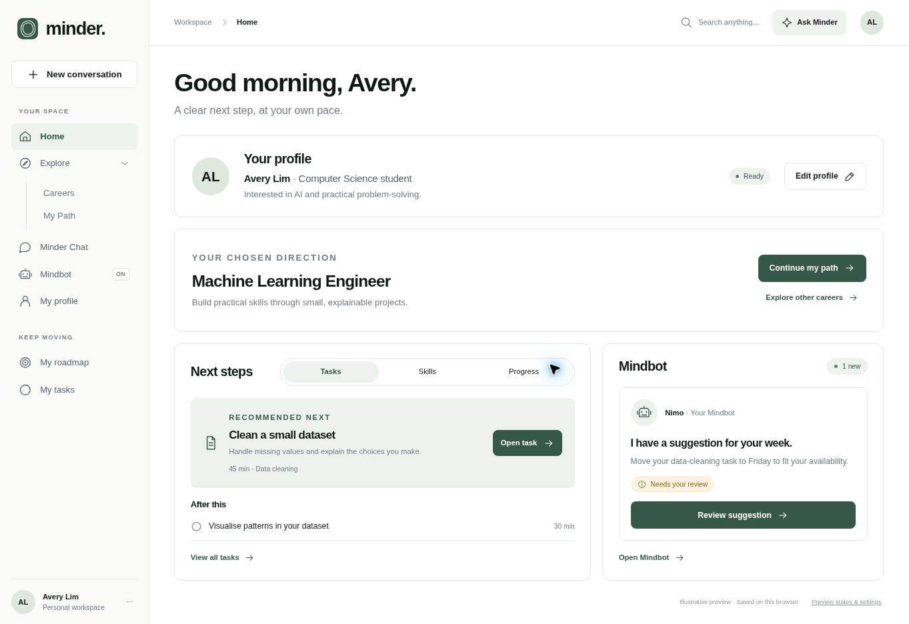
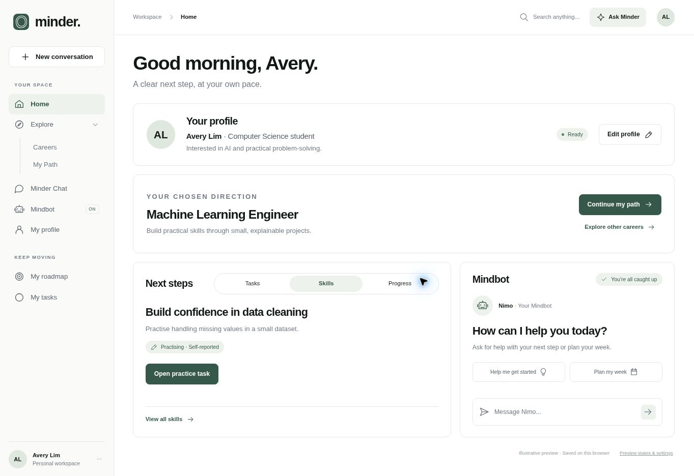
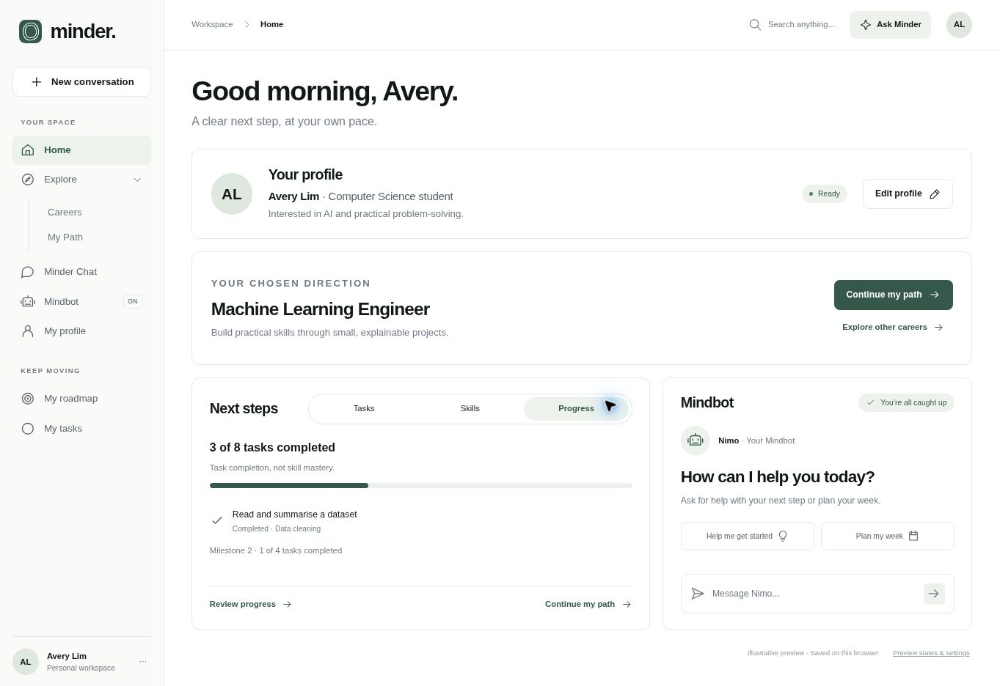
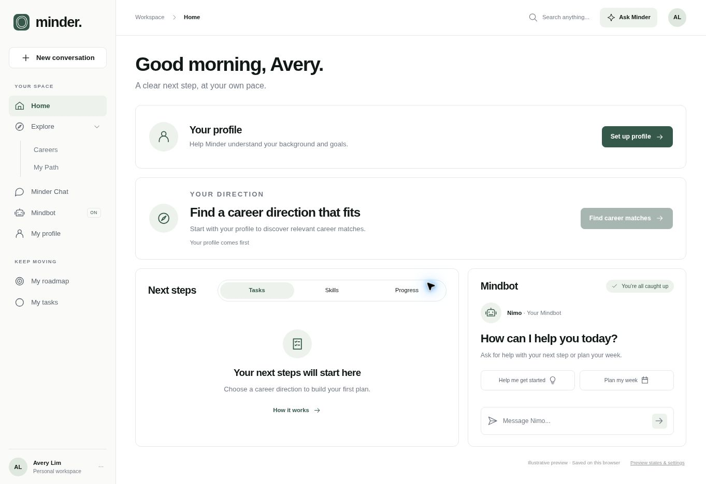
Historical source images: old naming is superseded by Mindbot in the final implementation.
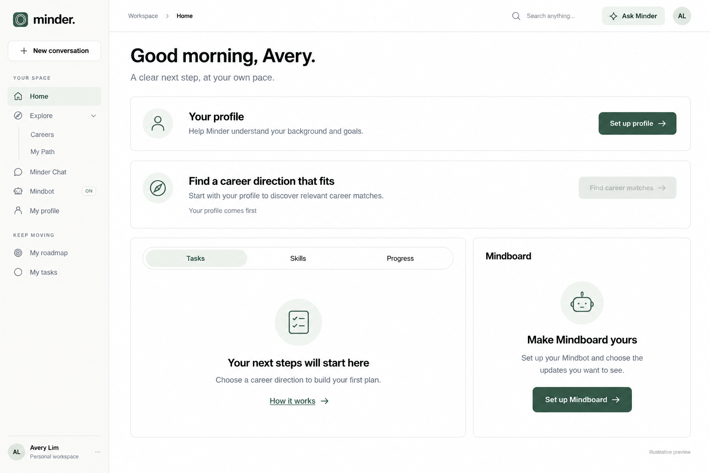
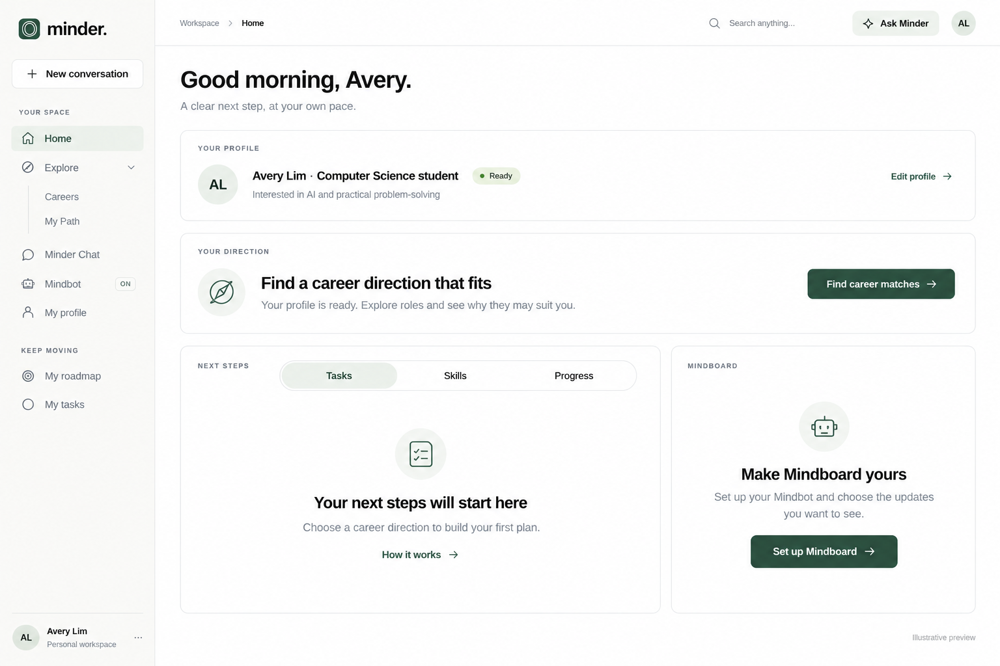
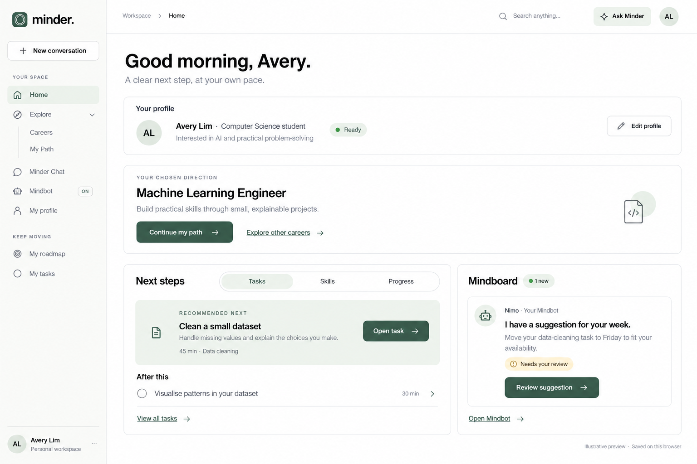
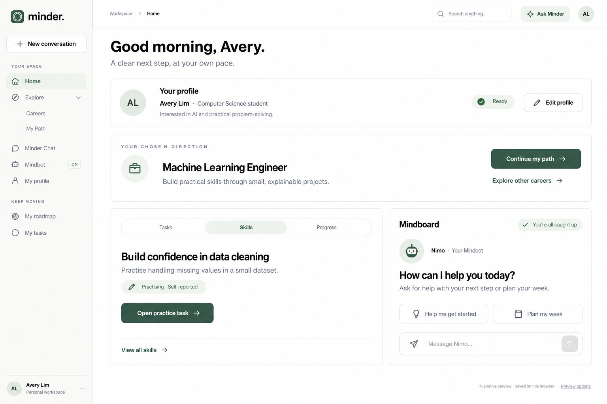